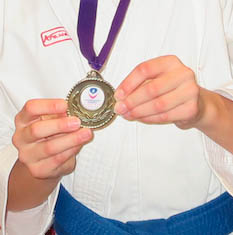

University Competition
by Billie (aged 12), 4th Kyu
On the way there I tried not to think about what was ahead, however it was hard to fight it! As I entered the building and saw the other clubs come in, they looked like soldiers marching in wearing black belts looking super smart. My heart was racing. I was so nervous the only people I wanted to speak to were Sensei James and Jane Sensei. I have only done one competition before and Jane Sensei was with me most of the time helping me and telling me the things I needed to do. As much as Sensei James tells you and thinks you can do it in class, it is a completely different game when you are there.
I was up first, out of anyone in the club and I just wanted to scream! But as I stepped up to go on the mat, there was no opponent… So I automatically went through to the next round. While I was waiting to go up, I saw this really good girl from university, my belt, my category but her age was around twenty-odd.
As I stepped up to my next round all I could hear was my Mum shouting “GO GO BILLIE GO GO GO!!!” First round I did Heian Godan and won against a purple belt with three flags on me out of three. Second round I did Heian Yondan two flags out of three. Third round I did Heian Godan again, and getting three flags out of a possible five. I was in the FINAL!!!! Yay!!!!!!!!!!
I had to wait two or so hours until I did the final, but had I known I was going to do it in front of everyone there I would have ran out of there screaming my head off!! While I was waiting, all of the club, which was eleven and over, were going on so I was running mat to mat helping the others and looking at the competition.
A couple of hours passed and it was the finals. We had to line up and bow and as I walked over Sensei James grabbed me and put me in a head lock, in his way of hugging! :) Little did I know I was going against that really good girl from earlier and I thought I was going to lose big time. However the lower categories went first and that included me. I was around category four. So because she was red she went up first.
I didn’t want to look at her but I could hear the crowd. All I needed to do was try my best and win this thing. As I walked on, all I could hear was my heart beat. I was shaking, I thought everyone could see me. But I shouted the name of the kata: Enpi, (Flight of the Swallow). It felt so unrealistic. It finished in a flash. I won!!!!!!!!!!!!!!!!!!!!!!!!!!! YAY!!! I walked off, I bowed, shook her hand and ran to my group. I got loads of claps, cheers and screams from my Mum!!! It was the best feeling ever!
